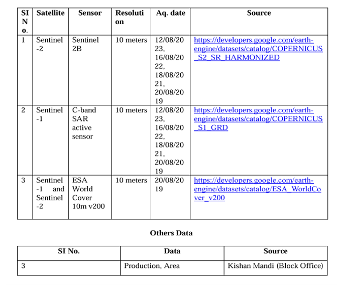
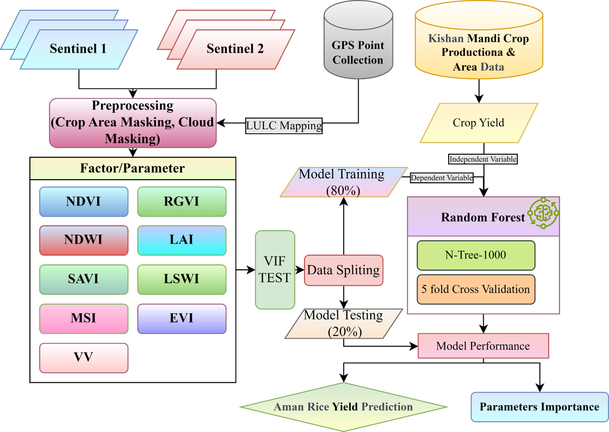
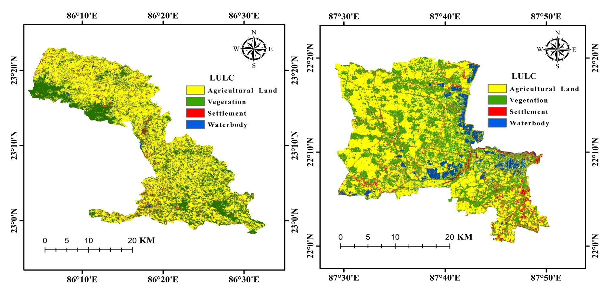
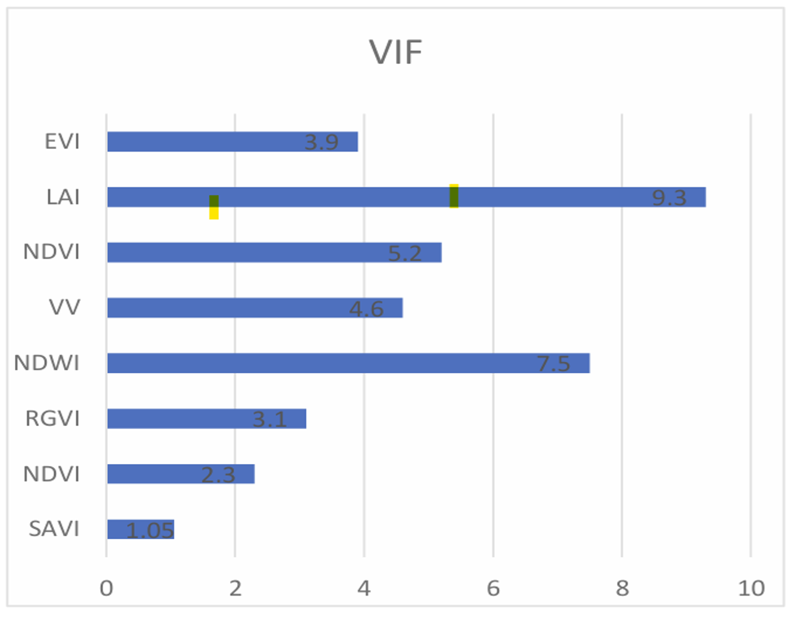
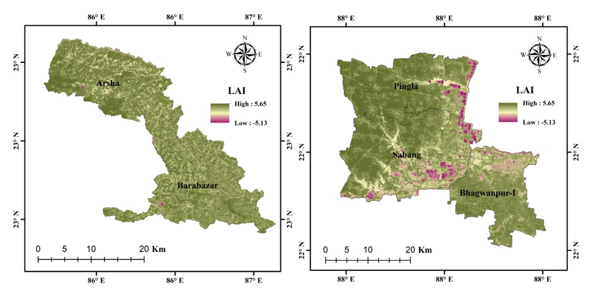
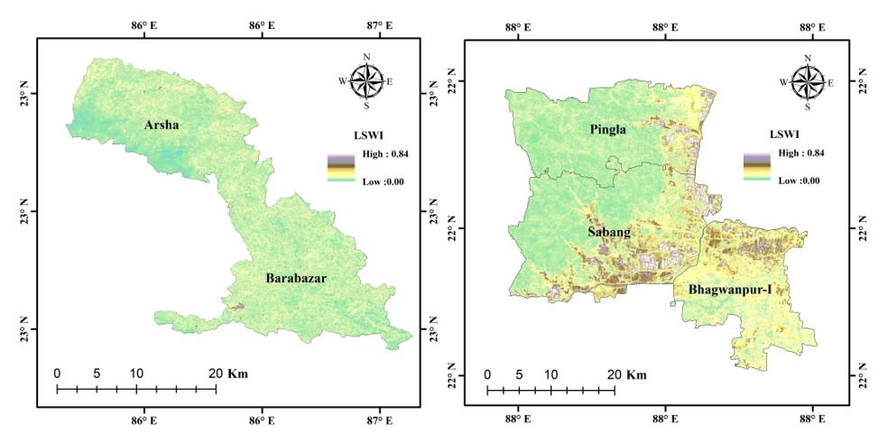
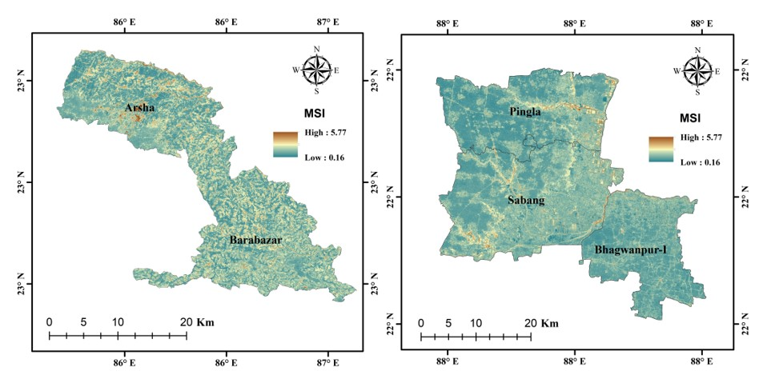
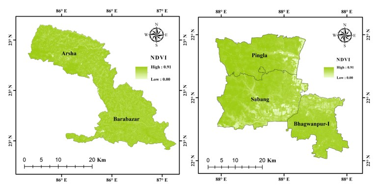
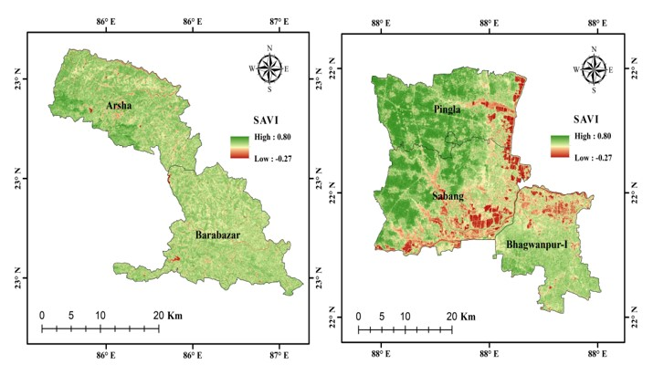

My Dessertation Project Under the Guidence of Dr. Dipwanitwa K. Dutta
Predicting Aman Rice Yield in Parts of Kangsabati River Basin Using Multi-Sensor Datasets Integrating with Machine Learning Techniques
Description of the Study Area
Arsha and Barabazar: Location: 23°11'11.00"N, 86°19'12.76"E Average high temperature: 33-34°C Average low temperature: 24-26°C Average rainfall: 220-270 mm Pingla, Sabang, and Bhagabanpur-I (Purba Medinipur and Paschim Medinipur Districts): Location: 22° 9'6.66"N, 87°40'39.95"E Average temperature: 29.8°C Average rainfall: 191.7 mm Major Crop: Paddy

Satellite, Different type of data with spatial resolution and their source

Methodology

LULC Map
Classification was performed using the following parameters: Band 2 - Blue (490 nm), Band 3 - Green (560 nm), Band 4 - Red (665 nm), Band 8 - Near-Infrared (842 nm), NDVI, NDWI, MSI, EVI, LSWI, and SAVI.

VIF Test for Model Accuracy
Variance Inflation Factor (VIF) is a measure of multicollinearity in regression analysis. VIF can help ensure that the predictors are not highly correlated, which can improve the model's reliability and interpretability.
    